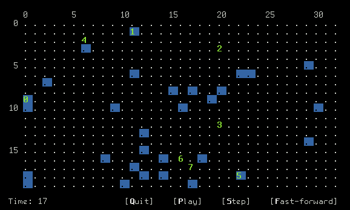
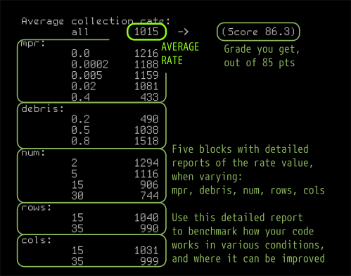

In the year 2055, everyone on Earth learned about the Kessler syndrome:
”[It] is a theory proposed by NASA scientist Donald J. Kessler in 1978, describing a self-sustaining cascading collision of space debris in low earth orbit. It’s the idea that two colliding objects in space generate more debris that then collides with other objects, creating even more shrapnel and litter until the entirety of low earth orbit is an impassable array of super swift stuff.
At that point, any entering satellite would face unprecedented risks of headfirst bombardment.” Documentary videos about it: [1], [2].
In June, 19 of 2055, a large defunct satellite Envisat collided with an unidentified debris object. One accident started an avalanche of space debris collisions. Within a week, all low orbit satellites were hit, joining the list of other space junk orbiting the planet.
Governments had to respond, redirecting their military budgets to deal with the issue. So here you are, the best programmer in your class, freshly hired for programming debris collecting robots. Tomorrow is your first work day, get ready!

Here’s a picture from the Mission Control Center. Robots are shown as green labels 0, 1, 2, … , and the debris fields are blue squares.
Each robot is equipped to perform the following actions:
enum Action {
COLLECT, // collect debris
UP, DOWN, LEFT, RIGHT, // move in four directions
REPAIR_UP, REPAIR_DOWN, // repair neighboring robots
REPAIR_LEFT, REPAIR_RIGHT
};
Furthermore, each robot is identified by its id. The system is also tracking the location of every robot,
which has two coordinates: row loc.r and column loc.c.
The maximum number of robots that can be programmed from the control center is 50,
and their id numbers are always in the range from 0 to 49.
When operating in empty space with no debris, all robot operations take 8 units of time to complete.
While, according to the safety standards, when working at a debris site,
the same operations are carried with higher accuracy and take 80 units of time, which is 10x of the normal operation time.
To run Mission Control software on your computer, copy the supplied file mcc.zip and extract it:
unzip mcc.zip
you will get a new directory mcc. To compile the program, go to that directory, and while inside of it, type:
make
Building this software requires development files for “ncurses” library. They are already installed on the Linux Lab computers.
To setup your own computer: On Ubuntu, this is package libncurses5-dev.
On Cygwin, this is libncurses-devel. On Mac OS, this is ncurses package (brew install ncurses).
After building the software, you get an executable file mission. To run it with the default parameters, type:
./mission
There are three sections in the program window: the map, the information panel, and the game log.
By pressing the keys [Q], [P], [S], and [F] on the keyboard, you can quit, play, pause, step,
or fast-forward. See the recording below:
The program can be also run with advanced options varying the map size, the number of robots, the amount of debris, the probability of robots crashing, and the random seed:
./mission 25 30 10 0.5 0.0001 12345
You can run the program with fewer options too, then the unspecified parameters assume their default values and are slightly randomized. For example, if you run it as
./mission 25 30 10 0.5
then the malfunction probability is set to default 0.0002, and the random seed is chosen at random.
Your task is to program the robots’ logic so they do their work more efficiently. There is no hard cap on what you can do, the task is relatively open-ended. You can start with simple improvements, and progress towards more complex ones:
make for changes to take an effect.)All robot logic is implemented in the file bot.cpp.
This is the only file you are going to submit. Don’t edit the other files.
Now, please open bot.cpp and inspect its code:
#include <cstdlib>
#include <iostream>
#include "bot.h"
using namespace std;
const int MAX_ROBOT_NUM = 50;
int NUM; // to remember number or robots
int ROWS, COLS; // map dimensions
/* Initialization procedure, called when the game starts: */
void onStart(int num, int rows, int cols, double mpr,
Area &area, ostream &log)
{
NUM = num; // save the number of robots and the map size
ROWS = rows;
COLS = cols;
log << "Start!" << endl;
}
/* Deciding robot's next move */
Action onRobotAction(int id, Loc loc, Area &area, ostream &log) {
int row = loc.r; // current row and column
int col = loc.c;
if (area.inspect(row, col) == DEBRIS)
return COLLECT;
else {
// if not at a debris field, move randomly:
switch(rand() % 4) {
case 0: return LEFT;
case 1: return RIGHT;
case 2: return UP;
default: return DOWN;
}
}
}
void onRobotMalfunction(int id, Loc loc, ostream &log) {
log << "Robot " << id << " is damaged." << endl;
}
void onClockTick(int time, ostream &log) {
if (time % 100 == 0) log << time << " ";
}
The provided code is already implementing certain reasonable strategy. It is quite simplistic for now and you, surely, can improve it. Let us first brief you on the robot programming interface.
There must be four functions defined in bot.cpp:
void onStart(int num, int rows, int cols, double mpr,
Area &area, ostream &log);
This is the initialization function that is run before the mission starts, it gets 6 parameters:
num is the total number robots under your control.rows and cols are the number of rows and columns in the map.mpr is the probability of robot malfunction (usually, it is 0.0002).area is the information about the debris and robot locations, described in detail later.log is a cout-like output stream object for printing out text messages in the programmer’s log.cout stream in this project. As a replacement, you are provided with log stream for printing.You are free to leave this function completely empty. However, if you would like to initialize global variables before the main robot execution starts, this function is a good place to do so.
Action onRobotAction(int id, Loc loc, Area &area, ostream &log);
This is the main robot logic function that is run for each robot, on each its turn.
It must return a valid Action, which tells the robot what it should perform on this one turn.
Here, simply speaking, we are expected to look at the surroundings of the robot and decide what should be its next move.
Available actions to return:
UP, DOWN, LEFT, RIGHT,COLLECT,REPAIR_UP, REPAIR_DOWN, REPAIR_LEFT, REPAIR_RIGHT.Parameters:
id is the current robot ID, it’s an integer from the range 0, 1, 2, 3, … , num-1loc is the current robot location, which is a value of a structure type Loc, the individual row and column coordinates can be accessed as
loc.r // robot's row
loc.c // robot's column
area provides the info about the surrounding debris and the coordinates of all other robots:
area.inspect(row,col) // inspecting the location
// at the coordinates (row,col). Returns EMPTY or DEBRIS
area.locate(ID).r // row coordinate of the robot ID
area.locate(ID).c // column coordinate of the robot ID
This function will be run on each robot’s turn, until there is no more space junk to collect.
We can suggest you one simple but efficient robot logic to start with:
Start scanning the area around the robot using the function area.inspect.
If you found a debris field nearby, make the robot walk towards it (return LEFT, RIGHT, UP, or DOWN in the direction of the debris).
Otherwise, if the robot already stands in a debris field, collect it (return COLLECT).
void onClockTick(int time, ostream &log);
This is a simple function that is run on each tick of the clock, and its parameters are the current time and the output log.
For example, you can use it to print current time in the log.
This function is not critical for the main functionality, and will be discussed later on the Day 4. It is run every time a robot breaks, so you can program the other robots to repair it.
On rare occasions, a robot’s debris collecting mechanism can break due to collisions or manufacturing and software defects.
This usually happens during the action COLLECT.
A malfunctioning robot stops collecting the debris, and starts discarding space junk from their cargo bay. Such malfunctioning robots are labeled as red squares in the program.
The proper course of action when a robot breaks is to send another robot to fix it. To help you identify such emergency situations,
there is a function onRobotMalfunction, it is executed immediately after a robot breaks, so you can respond to it.
When a mission starts, we are provided with a prediction of the malfunction probability,
it is passed as the argument mpr into function onStart.
In usual conditions this probability is small and approximately equal to 0.0002, however it can be as large as 0.5.
An advanced robot logic program can execute different behavior if this probability is high or low, if you wish to fine-tine
your code in such a way, you can do so.
Your program is expected to control robots in a wide range of environment conditions:
5 ≤ rows ≤ 40 |
number of rows |
5 ≤ cols ≤ 40 |
number of columns |
1 ≤ num ≤ 50 |
number of robots |
0.0 ≤ debris ≤ 1.0 |
debris density |
0.0 ≤ mpr ≤ 0.5 |
malfunction probability |
Reminding you that the program can be run with specific values of these variables as follows (in the command below, substitute variable names with actual numeric values!):
./mission rows cols num debris mpr
(When running the program with non-zero malfunction probability, test your code with at least 2 robots, so one robot can repair the other when needed.)
Robots’ performance is measured as their debris collection rate, the amount of debris collected per unit of time per robot. For convenience, we adjusted this value to the range from 0 to 1000. You will get maximum score if you get 1000 collection rate, and the result above 1000 would be your extra bonus.
To measure the debris collection rate of your robots, you are provided with a testing script test.rb. It is a Ruby script that can be run as follows:
./test.rb ./mission
An example output with highlighted average debris collection rate is shown below. Bear in mind that this is a randomized quick performance estimation test. The Gradescope testing script is slightly different, runs on a wider range of variable values, and is generally more accurate. So your numbers may vary when using this script and Gradescope:

One important advantage of using this script rather than Gradescope, is that it benchmarks how your robots work for different
values of the variables mpr, debris, num, rows, cols. If you see that the robots underperform under certain conditions,
try to improve your code to work better for that range of conditions.
The expected running time of the test is within 15 seconds. If your code runs much slower (longer than 45 seconds), then it requires improvement.
This project is more open-ended than the previous ones. To encourage clever solutions and ingenuity on your part, in addition to the normal grade, we also run a tournament, ranking your programs’ performance. The authors of the best programs will receive additional prizes (in the form of extra grade bonus), as well as bragging rights, of course, if you will.
The Leaderboard will be shown in your Gradescope submission, where you can see the relative performance of your code.
To submit your code, you will be required to provide a pseudonym that will be shown instead of your real name. Please choose pseudonyms not revealing your real name. If you want a suggestion on a fun nickname, see these generators, for example:
Late submissions are excluded from participating in the tournament, and also not receiving any bonus points above the points limit (cannot get more than the maximum 85 pts in performance grade). Otherwise, the usual lateness policy applies.
Upload only bot.cpp, no other files or executables.
You have to provide a pseudonym when submitting the file, which will be shown in the Leaderboard. The pseudonym should not reveal your real name,
some suggestions for generating fun nicknames are listed above.
Start the file with a comment that contains your name and a short program description, for example:
/*
Author: your name
Course: CSCI-135
Instructor: their name
Assignment: title, e.g., Project 3
Here, briefly, at least in one or a few sentences
describe what the program does.
*/